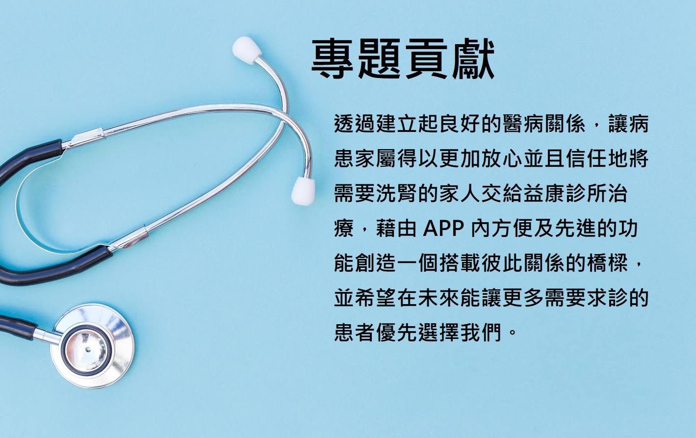
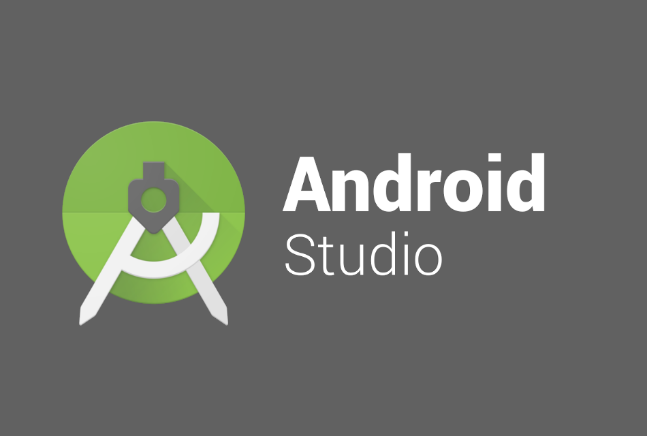
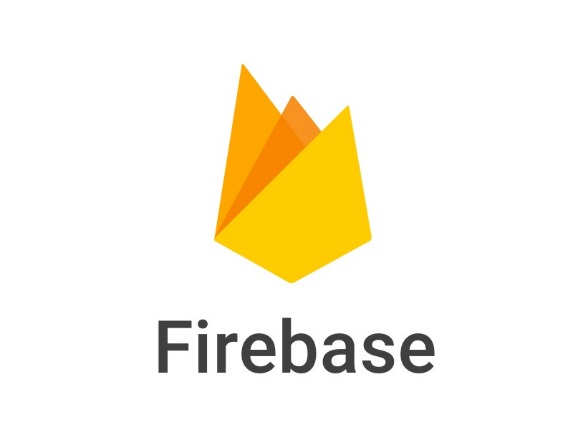
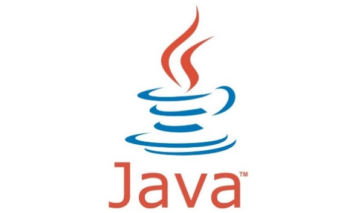

專題緣起
我們起初就希望能幫助更多人。透過 老師的介紹，接觸到益康診所的 Iris 學姊，而益康診所是一間位於 台北的洗腎中心，經過多次的聯絡及洽談了解益康診所的回診流 程，也與主治醫生曾國憲先生溝通，尊重醫生的意願並且討論出希 望具備的功能之後便開始著手 App 開發。 我們以病患及其家屬的角度為出發點設想應該包含的功能，除了 讓家屬能夠更方便關心需要洗腎的家人，也讓病患能更了解自己的 身體。因為現今多數人上班忙碌，無法時常照顧以及關心家中需要 洗腎的病患，因此我們設計了一套系統，包含了健康狀況、病患回 診以及結束診療的時間、公告欄、醫病留言板、請假等功能。讓醫 生可以透過 APP 明確告知有關於病患的注意事項，也搭建起家人之 間溝通的橋樑。
專題特色
-
健康狀況
於此可以查看院方提供的一些 衛教資訊，以及會員的健康資料數據， 家屬也可由此來觀察病患身體是否有異常以便 關心家人。
-
請假功能
於此可以查看院方提供的一些 衛教資訊，以及會員的健康資料數據， 家屬也可由此來觀察病患身體是否有異常以便 關心家人。
-

醫病留言板
於此可以查看院方提供的一些 衛教資訊，以及會員的健康資料數據， 家屬也可由此來觀察病患身體是否有異常以便 關心家人。
-
簽到
於此可以查看院方提供的一些 衛教資訊，以及會員的健康資料數據， 家屬也可由此來觀察病患身體是否有異常以便 關心家人。
專題介紹
使用技術
-

Android Studio
Android Studio是一個為Android平台開發城市的整合式開發環境，內建布局編輯器可以讓使用者更方便的托放UI元件。
-

Firebase
Firebase 是一套雲端後端服務平台，提供多種開發情境(行動端、網頁端)所需要的功能，具備即時資料與低維護成本的特色。 Google 於2004年10月收購其公司並持續維護，後續整合Google 雲端服務，讓Firebase 功能更加完善，得到更多開發人員青睞。
-

Java
Java是一種廣泛使用的電腦程式語言，擁有跨平台、物件導向、泛型程式設計的特性，廣泛應用於企業級Web應用開發和行動應用開發，全球數以萬計的Java開發公司被要求所設計的Java軟體必須相互相容。